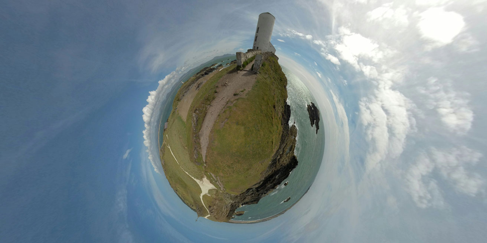
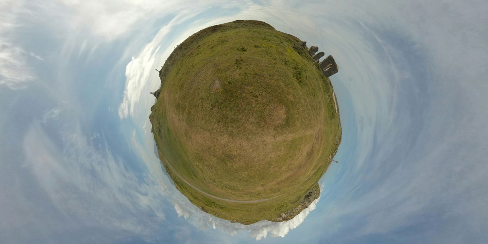

Billinge Beacon
Billinge Beacon, the highest point in Merseyside. Views stretching across Merseyside towards North Wales. You can easily see Anglesey on a clear day. The beacon itself was used for aircraft observation during and after the war.
St Dwynwen’s Cross
On the highest point of Llanddwyn Island stands the huge St Dwynwen's cross. Dwnwen is the Welsh patron saint of lovers.

Twr Mawr Lighthouse
Tŵr Mawr lighthouse (meaning 'great tower' in Welsh), on Ynys Llanddwyn on Anglesey, Wales, marks the western entrance to the Menai Strait.
Tŵr Bach Lighthouse
Twr Bach Lighthouse (meaning 'little tower' in Welsh) is situated on a small island next to Llanddwyn Island which is joined by a small causeway. It is next to the old lifeboat station which remained in service until 1903.

Penrhos Beach
Penrhos Beach can be accessed by walking through Newborough Forest, which brings you out on top of the steep sand dunes with views of Ynys Llanddwyn, Llanddwyn Beach and accross the Menai Strait to Snowdonia.

Eglwys Santes Dwynwen
Eglwys Santes Dwynwen: Dwynwen withdrew to a small tidal island off the southwest coast of Anglesey. There she built a church; which became known as Llanddwyn ('Church of Dwynwen'). Its remains can still be seen on Ynys Llanddwyn.
Llanddwyn Beach
Renowned as one of the finest beaches in Britain, Llanddwyn Beach is backed by, impressive sand dunes, and boasts spectacular views of Snowdonia National Park, Caemarfon and the Llyn Peninsula.
Newborough Forest
Newborough Forest is a forest to the west of Newborough, Anglesey, North Wales. It is one of the most important red squirrel conservation sites in the United Kingdom. It can be accessed from the Carpark or the steep sandunes on the beach.

Billinge Hill
With a maximum elevation of 179m (587 ft), it is the highest point of Merseyside. Billinge Hill was used by the Royal Observer Corps, and there was a bunker at the site, 60 yards (55 metres) west of and below the beacon.